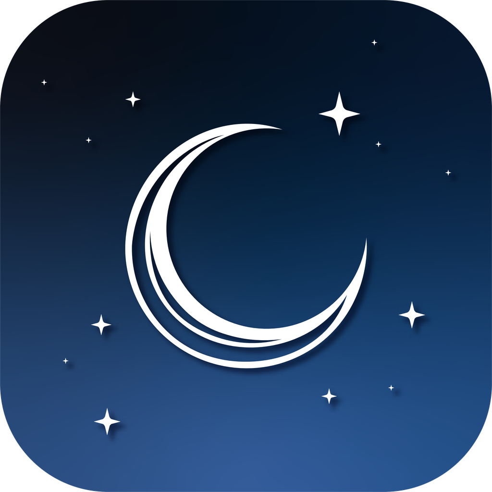

آخر تحديث: ١٦ يوليو ٢٠٢٦
توضّح سياسة الخصوصية هذه كيفية تعامل تطبيق قيام ("التطبيق"، "نحن") مع معلوماتك. باختصار: لا يجمع تطبيق قيام أي بيانات شخصية عنك، ولا يخزّنها، ولا يشاركها. لا توجد حسابات مستخدمين، ولا إعلانات، ولا أدوات تحليل أو تتبّع من أطراف خارجية.
لا يتطلّب تطبيق قيام إنشاء حساب أو تقديم أي معلومات شخصية مثل الاسم أو البريد الإلكتروني أو رقم الهاتف. لا نستخدم معرّفات إعلانية، ولا نضمّن أي برامج تحليل أو تتبّع أو إعلانات من أطراف خارجية.
إذا فعّلت مواقيت الصلاة أو بوصلة القبلة، يستخدم التطبيق موقع جهازك لحساب مواقيت الصلاة الدقيقة واتجاه الكعبة. تتم هذه العملية بالكامل على جهازك. لا يتم إرسال موقعك إلينا أو إلى أي طرف خارجي، ولا يُخزَّن على أي خادم.
يمكنك منح إذن الوصول إلى الموقع أو إلغاؤه في أي وقت من إعدادات iOS > الخصوصية والأمان > خدمات الموقع.
تُخزَّن خطط القراءة، والتقدّم، والإنجازات، والعلامات المرجعية، وتفضيلاتك محليًا على جهازك فقط. لا تُرسَل هذه المعلومات إلينا. ويؤدي حذف التطبيق إلى إزالة هذه البيانات من جهازك.
لتوفير التلاوات الصوتية، وبيانات الكلمة بكلمة، والخطوط، ينزّل التطبيق محتوى من خدمات توصيل محتوى تابعة لأطراف خارجية، منها mp3quran.net وqurancdn.com وCloudflare. عندما يطلب جهازك هذه الملفات، تعالج تلك الجهات الطلب وقد تعالج معلومات تقنية مثل عنوان IP كجزء من التشغيل الطبيعي للإنترنت. نحن لا نتحكّم في هذه الخدمات؛ يُرجى الرجوع إلى سياسات الخصوصية الخاصة بها. لا يرسل التطبيق أي معلومات شخصية خاصة بك في هذه الطلبات.
لا يجمع تطبيق قيام أي معلومات شخصية من أي شخص، بما في ذلك الأطفال. التطبيق مناسب للمستخدمين من جميع الأعمار.
إذا أجرينا تغييرات على هذه السياسة، فسنحدّث التاريخ في أعلى هذه الصفحة. ويعني استمرارك في استخدام التطبيق بعد التغييرات قبولك للسياسة المُحدَّثة.
إذا كان لديك أي أسئلة حول سياسة الخصوصية هذه، تواصل معنا على:
mohamedsami8844@gmail.com